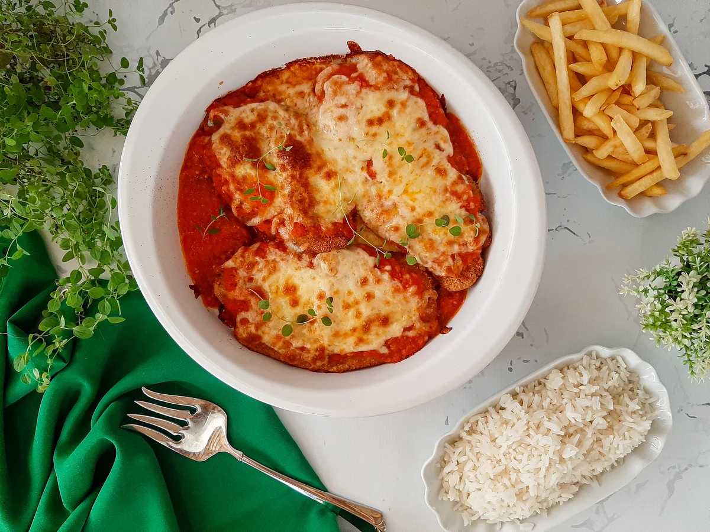

Ingredientes
- 4 filés de frango
- Sal e pimenta-do-reino a gosto
- 2 dentes de alho picados
- Farinha de trigo para empanar
- 2 ovos batidos
- Farinha de rosca para empanar
- Óleo para fritar
- 1 xícara de molho de tomate
- 200g de mussarela fatiada
- 50g de queijo parmesão ralado
Modo de Preparo
- Tempere os filés de frango com sal, pimenta-do-reino e alho picado. Deixe descansar por 15 minutos.
- Empane os filés, passando-os na farinha de trigo, no ovo batido e na farinha de rosca.
- Aqueça o óleo em uma frigideira e frite os filés até ficarem dourados. Escorra em papel-toalha.
- Disponha os filés em um refratário, cubra com o molho de tomate, fatias de mussarela e polvilhe o parmesão ralado.
- Leve ao forno preaquecido a 200°C até o queijo derreter e dourar levemente.
- Sirva quente com arroz branco e batata frita, se desejar.